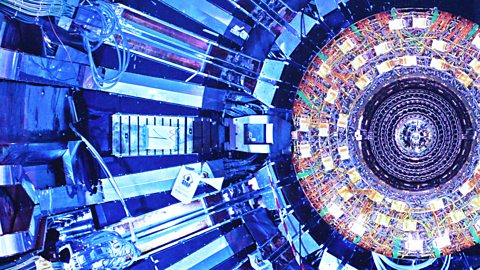
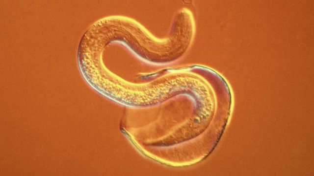
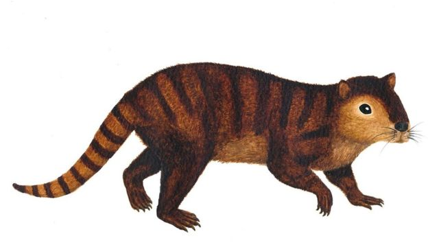

Organisms
Slices
Four
Full-promo demo.
Featured 
Large Hadron Collider restarts after two-year rebuild
Particle beams have now travelled in both directions, inside parallel pipes, at a whisker below the speed of light.

John Simpson World affairs editor

Nobel Prize for parasitic diseases
The Nobel Prize for physiology or medicine has been awarded to two teams for their groundbreaking work on parasitic diseases.

Mammal species outlived the dinosaurs
Scientists have discovered a species of ancient mammal that survived the event that led to the extinction of the dinosaurs.
UN battle looms over climate costs
Divisions between rich and poor countries re-emerge as nations submit their plans for tackling climate change to the UN.
Four
Headline-only promo demo.
Featured
Large Hadron Collider restarts after two-year rebuild
Nobel Prize for parasitic diseases
Newsbeat